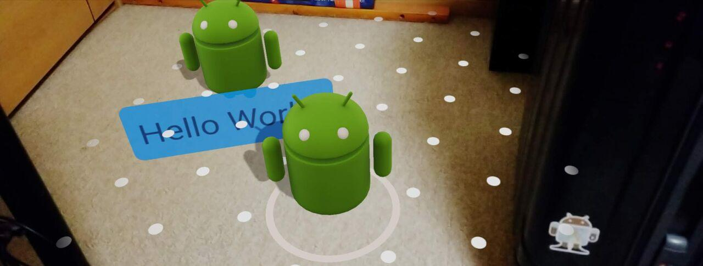
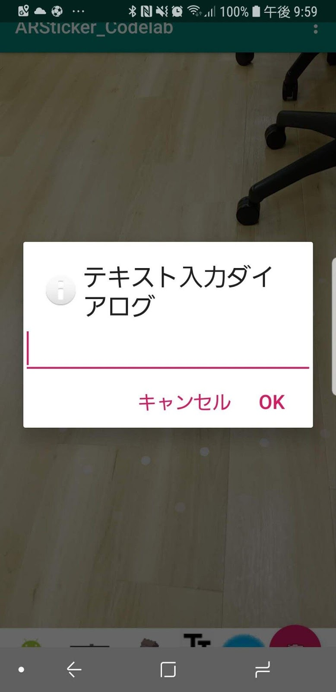
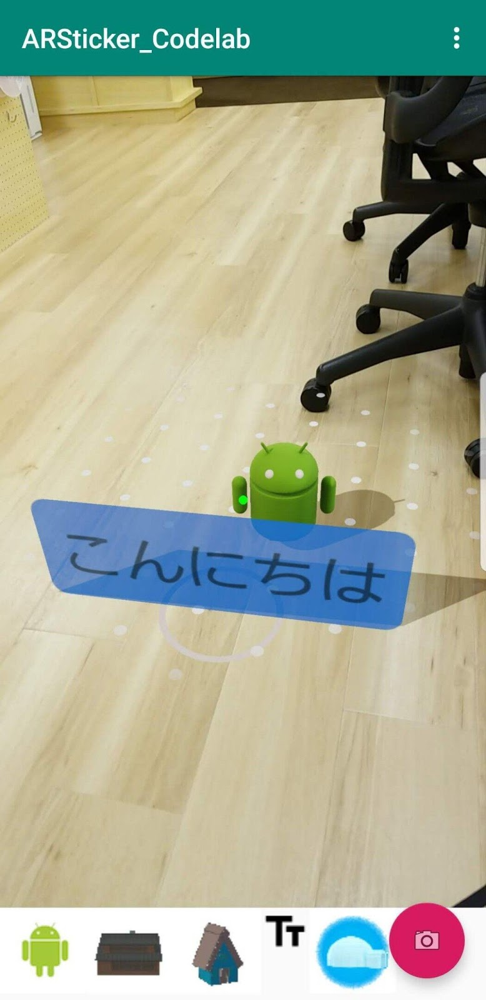

この資料ではSceneformのcodelabで作成するアプリに機能を追加します。
ViewRenderableを利用してテキストを表示する看板のようなオブジェクトを配置できるようにします。

res/layout の下にテキストを表示するためのレイアウトxmlを追加します。名前は billboard.xml にします。
ViewRenderableに読み込ませると、このレイアウトの通りの構成のViewが板状のオブジェクトとして表示されます。
<?xml version="1.0" encoding="utf-8"?>
<TextView xmlns:android="http://schemas.android.com/apk/res/android"
android:id="@+id/planetInfoCard"
android:layout_width="wrap_content"
android:layout_height="wrap_content"
android:layout_weight="1"
android:background="@drawable/rounded_bg"
android:gravity="center"
android:orientation="vertical"
android:padding="6dp"
android:text="Hello World!"
android:textAlignment="center" />
res/drawableの下にバックグラウンドのxmlを追加します。名前はrounded_bg.xmlにします。
これをbackgroundとして指定することにより、角丸で青い半透明の板として表示されるようになります。
<?xml version="1.0" encoding="utf-8"?>
<shape xmlns:android="http://schemas.android.com/apk/res/android">
<solid android:color="#E61976d2"/>
<corners android:radius="5dp"/>
</shape>MainActivity.javaに2つのメソッドを追加します。
addTextObjectでは次のような処理を行います。
private void addTextObject(String msg) {
Frame frame = fragment.getArSceneView().getArFrame();
Point pt = getScreenCenter();
List<HitResult> hits;
if (frame != null) {
hits = frame.hitTest(pt.x, pt.y);
for (HitResult hit : hits) {
Trackable trackable = hit.getTrackable();
if ((trackable instanceof Plane &&
((Plane) trackable).isPoseInPolygon(hit.getHitPose()))) {
placeTextObject(hit.createAnchor(), msg);
break;
}
}
}
}placeTextObjectメソッドでは次のような処理を行います。
private void placeTextObject(Anchor anchor, String msg) {
CompletableFuture<Void> renderableFuture =
ViewRenderable.builder()
.setView(fragment.getContext(), R.layout.billboard)
.build()
.thenAccept(renderable -> {
TextView textView = (TextView)renderable.getView();
textView.setText(msg);
addNodeToScene(anchor, renderable);
})
.exceptionally(throwable -> {
AlertDialog.Builder builder = new AlertDialog.Builder(this);
builder.setMessage(throwable.getMessage())
.setTitle("Codelab error!");
AlertDialog dialog = builder.create();
dialog.show();
return null;
});
}アイコンをダウンロードします。
https://material.io/tools/icons/static/icons/baseline-text_fields-black-18.zip
このアイコンを使用します。
ダウンロードしたzipファイルを解凍して、2xのフォルダの下にあるbaseline_text_fields_black_18dp.png
をAndroid Studioのres/drawableの下にコピーします。
プロジェクトに追加したアイコンを表示し、そのアイコンがタップされた際のリスナーのコードを追加します。
MainActivity.javaのinitializeGallery()に下記の「ここから追加部分」と「ここまで追加部分」のコメントで囲まれた範囲のコードを追加します。
private void initializeGallery() {
LinearLayout gallery = findViewById(R.id.gallery_layout);
//
// 〜途中省略〜
//
// ここから追加部分
ImageView text = new ImageView(this);
text.setImageResource(R.drawable.baseline_text_fields_black_18dp);
text.setContentDescription("text");
text.setOnClickListener(view ->{addTextObject("Hello World!");});
gallery.addView(text);
// ここまで追加部分
}画面下のギャラリーに追加されたこのボタンを押すと Hello World の文字が配置された板が表示されるはずです。
Hello Worldという固定の文字列ではなく、好きな文字を入力して配置できるようにしてみましょう。
MainActivity.javaにテキスト入力ダイアログを表示するメソッドを追加します。
ここで行っている処理は、ダイアログで文字を入力してOKボタンが押された際に、入力された文字列を取得してaddTextObjectを呼び出すようにするものです。
private void showEditTextDialog() {
final EditText editView = new EditText(MainActivity.this);
new AlertDialog.Builder(MainActivity.this)
.setIcon(android.R.drawable.ic_dialog_info)
.setTitle("テキスト入力ダイアログ")
.setView(editView)
.setPositiveButton("OK", new DialogInterface.OnClickListener() {
public void onClick(DialogInterface dialog, int whichButton) {
addTextObject(editView.getText().toString());
}
})
.setNegativeButton("キャンセル", new DialogInterface.OnClickListener() {
public void onClick(DialogInterface dialog, int whichButton) {
}
})
.show();
}アイコンがタップされた際に呼び出すメソッドを変更します。「この行のみ修正する」とコメントのある行を修正します。
private void initializeGallery() {
// 途中省略
ImageView text = new ImageView(this);
text.setImageResource(R.drawable.baseline_text_fields_black_18dp);
text.setContentDescription("text");
text.setOnClickListener(view ->{showEditTextDialog();}); // この行のみ修正する
gallery.addView(text);
}ギャラリーの文字ボタンを押すとこのようにテキスト入力ダイアログが表示されて、任意の文字を入力することができます。

文字を入力してOKを押すと文字を表示した板状のオブジェクトが配置されます。
